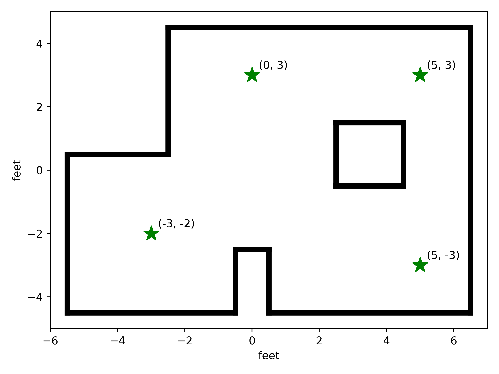

Lab 11: Localization (Real)
Now that we have our Bayes filter, we can combine this with our measurement-gathering routine from Lab 9 to localize our robot in the real maze
Where We Left Off…
Previously in Lab 10, we wrote the Bayes filter to localize with noisy
measurement data. We can run a staff-provided version of this in Lab 11
(lab11_sim.ipynb) to verify that our code works. The only modification
I made compared to Lab 10 was to change the configuration file,
world.yaml, to expect 24 evenly-spaced measurements; this matches Lab
9, and the increased data should hopefully help the robot localize better
{kind=link}
We can see that, despite the incorrect odometry model (red), our belief (blue) is reasonably close to the ground truth (green).
Data Communication
The high-level data collection FSM from Lab 9 still works for this lab,
and is a great starting point. However, one modification needed is for
the data communication; instead of being able to visually wait until the
robot is done to transfer data, we now need to be able to actively notify
Python when data is collected, so that it can be done as part of the
update_step function of our Localizer in Python. To do this, the
FSM now writes “done” to the characteristic string when it transitions
back to the IDLE state:
// In our state transition logic - see Lab 9
case WAIT:
if ( tofs.sensor1.checkForDataReady() ) {
data_points[num_points++] = tofs.sensor1.getDistance();
if ( num_points < 5 ) {
curr_state = START;
}
else {
int avg_distance =
( data_points[0] + data_points[1] + data_points[2] +
data_points[3] + data_points[4] ) /
5;
log_map_data( curr_time, dmp.yaw().angle, avg_distance );
num_measurements++;
if ( num_measurements < 24 ) {
pid.set_setpoint( pid.get_setpoint() - 15 );
curr_state = PID;
}
else {
stop_pid();
tx_estring_value.clear();
tx_estring_value.append( "done" );
tx_characteristic_string.writeValue( tx_estring_value.c_str() );
curr_state = IDLE;
}
}
}
break;
I also used this to mark when data transfer was complete, from the
GET_ANGLE_DATA BLE command:
In Python, our notification handler could then detect when it saw this
value, allowing the function to continue. This allowed me to implement
the perform_observation_loop function to gather data:
Send the
RUN_TURNBLE command to start gathering dataUse a notification handler to set
is_donewhen the run is completeWait on a coroutine
wait_is_doneto asynchronously wait untilis_donewas setSend the
GET_ANGLE_DATAcommand to gather dataUse a notification handler to gather all 24 data points, and set
is_donewhen all are collectedSimilar to before, wait on
wait_is_doneuntil all data points are receivedReturn the data points, factoring in the ToF sensor offset and unit conversions (see Lab 9)
Asyncronous Functions
To make it easier to wait on coroutines, I followed the guide in
the lab instructions
to implement perform_observation_loop as an asynchronous coroutine
async def perform_observation_loop(self, rot_vel=120):
"""Perform the observation loop behavior on the real robot, where the robot does
a 360 degree turn in place while collecting equidistant (in the angular space) sensor
readings, with the first sensor reading taken at the robot's current heading.
The number of sensor readings depends on "observations_count"(=18) defined in world.yaml.
Keyword arguments:
rot_vel -- (Optional) Angular Velocity for loop (degrees/second)
Do not remove this parameter from the function definition, even if you don't use it.
Returns:
sensor_ranges -- A column numpy array of the range values (meters)
sensor_bearings -- A column numpy array of the bearings at which the sensor readings were taken (degrees)
The bearing values are not used in the Localization module, so you may return a empty numpy array
"""
# Start running the turn
self.ble.send_command(CMD.RUN_TURN, "")
global is_done
is_done = False
print("Running...")
# Wait for the turn to be done
def resp_handler(_uid, response):
global is_done
resp = response.decode()
print("Got response: ", resp)
if resp == "done":
is_done = True
self.ble.start_notify(ble.uuid['RX_STRING'], resp_handler)
async def wait_for_done():
global is_done
while( not is_done ):
await asyncio.sleep(3)
print("Waiting...")
await wait_for_done()
self.ble.stop_notify(ble.uuid['RX_STRING'])
print("Done!", flush = True)
# Get the data
is_done = False
data_time = []
data_yaw = []
data_distance = []
data_total = []
NUM_SAMPLES = 24
global i
i = 0
def parse_angle_data( data: str ):
data_components = data.split("|")
time = (float(data_components[0]) / 1000)
yaw = float(data_components[1]) * np.pi / 180
distance = float(data_components[2])
return time, yaw, distance
def angle_data_handler(_uid, response):
global i
global is_done
time, yaw, distance = parse_angle_data(response.decode())
data_yaw.append(yaw)
data_distance.append(distance)
i = i + 1
print(f"{i * 100 / NUM_SAMPLES:.2f}% done", end = '\r')
if i == NUM_SAMPLES:
is_done = True
self.ble.start_notify(ble.uuid['RX_STRING'], angle_data_handler)
self.ble.send_command(CMD.GET_ANGLE_DATA, "")
print("Logging...")
await wait_for_done()
self.ble.stop_notify(ble.uuid['RX_STRING'])
print("Done!")
return ((np.array(data_distance)[np.newaxis].T + 75) / 1000, np.empty([1, 1]))
Localization Results
With the code above, Ned is now all set to gather data and localize! Below are videos of him localizing in each of the four required locations (with the blue dot in the plotter indicating the position belief, matching the approximate location):
{kind=link}
\((-3, -2)\)
{kind=link}
{kind=link}
\((0, 3)\)
{kind=link}
{kind=link}
\((5, 3)\)
{kind=link}
{kind=link}
\((5, -3)\)
{kind=link}
{kind=link}
We can also quantitatively compare the position belief with the ground truth (noting that probabilities are rounded):
Ground Truth (ft, ft, angle) |
Ground Truth (m, m, angle) |
Belief (m, m, angle) |
Belief Probability |
|---|---|---|---|
\((-3, -2, 0)\) |
\((-0.914, -0.607, 0)\) |
\((-0.914, -0.610, 30)\) |
\(1.0\) |
\((0, 3, 0)\) |
\((0, 0.914, 0)\) |
\((0, 0.914, 10)\) |
\(1.0\) |
\((5, 3, 0)\) |
\((1.524, 0.914, 0)\) |
\((1.524, 0.610, 10)\) |
\(1.0\) |
\((5, -3, 0)\) |
\((1.524, -0.914, 0)\) |
\((1.524, -0.914, 10)\) |
\(1.0\) |
These results are astonishingly accurate, at least to me. While they are likely aided by the fact that close positions are rounded together due to our grid quantization, all of them are within the \((0.3048m, 0.3048m, 20^\circ)\) grid resolution of the ground truth, with the exception of the angle for \((-3, -2)\), and the y-value for \((5, 3)\):
Angle: This is likely due to the particular location looking similar for slight adjustments of angles; our measurement could pick up the large gap to the northeast with slight variation due to the ToF spread and slight inaccuracy in movement, and may perceive the angle slightly differently.
Y-Value: This is likely due to a slightly larger-than-normal off-axis procession when collecting measurements, as seen in the video. Along with the fact that it appears to slightly miss the box corner when starting to angle down, this might make the measurements indicate a lower position.
Nevertheless, these results overall localize very well, and give confidence in their utility heading into Lab 12